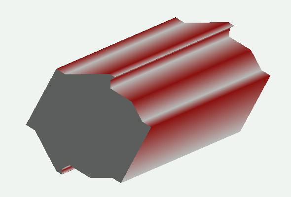
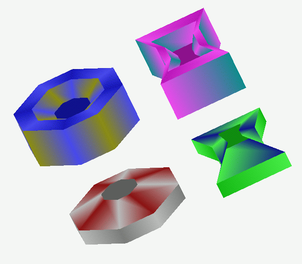
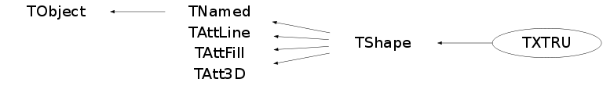

class TXTRU: public TShape

XTRU is an poly-extrusion with fixed outline shape in x-y, a sequence of z extents (segments) and two end faces perpendicular to the z axis. The x-y outline is defined by an ordered list of points; the overall scale of the outline scales linearly between z points and the center can have an x-y offset specified at each segment end. A TXTRU has the following parameters: - name name of the shape - title shape's title - material (see TMaterial) - nxy number of x-y vertex points constituting the outline -- this number should be at least 3 - nz number of planes perpendicular to the z axis where the scaling dimension of the section is given -- this number should be at least 2 - Xvtx array [nxy] of X coordinates of vertices - Yvtx array [nxy] of Y coordinates of vertices - z array [nz] of z plane positions - scale array [nz] of scale factors - x0 array [nz] of x offsets - y0 array [nz] of y offsets Author: R. Hatcher 2000.04.21 All XTRU shapes are correctly rendered in wire mode but can encounter difficulty when rendered as a solid with hidden surfaces. These exceptions occur if the outline shape is not a convex polygon. Both the X3D and OpenGL renderers expect polygons to be convex. The OpenGL spec specifies that points defining a polygon using the GL_POLYGON primitive may be rendered as the convex hull of that set. Solid rendering under X3D can also give unexpected artifacts if the combination of x-y-z offsets and scales for the segments are chosen in such a manner that they represent a concave shape when sliced along a plane parallel to the z axis. Choosing sets of point that represent a malformed polygon is not supported, but testing for such a condition is not implemented and thus it is left to the user to avoid this mistake.

Function Members (Methods)
public:
| TXTRU() | |
| TXTRU(const TXTRU& xtru) | |
| TXTRU(const char* name, const char* title, const char* material, Int_t nyx, Int_t nz) | |
| virtual | ~TXTRU() |
| void | TObject::AbstractMethod(const char* method) const |
| virtual void | TObject::AppendPad(Option_t* option = "") |
| virtual void | TObject::Browse(TBrowser* b) |
| static TClass* | Class() |
| virtual const char* | TObject::ClassName() const |
| virtual void | TNamed::Clear(Option_t* option = "") |
| virtual TObject* | TNamed::Clone(const char* newname = "") const |
| virtual Int_t | TNamed::Compare(const TObject* obj) const |
| virtual void | Copy(TObject& xtru) const |
| virtual void | DefineSection(Int_t secNum, Float_t z, Float_t scale = 1., Float_t x0 = 0., Float_t y0 = 0.) |
| virtual void | DefineVertex(Int_t pointNum, Float_t x, Float_t y) |
| virtual void | TObject::Delete(Option_t* option = "")MENU |
| Int_t | TAttLine::DistancetoLine(Int_t px, Int_t py, Double_t xp1, Double_t yp1, Double_t xp2, Double_t yp2) |
| virtual Int_t | DistancetoPrimitive(Int_t px, Int_t py) |
| virtual void | TObject::Draw(Option_t* option = "") |
| virtual void | TObject::DrawClass() constMENU |
| virtual TObject* | TObject::DrawClone(Option_t* option = "") constMENU |
| virtual void | TObject::Dump() constMENU |
| virtual void | TObject::Error(const char* method, const char* msgfmt) const |
| virtual void | TObject::Execute(const char* method, const char* params, Int_t* error = 0) |
| virtual void | TObject::Execute(TMethod* method, TObjArray* params, Int_t* error = 0) |
| virtual void | TObject::ExecuteEvent(Int_t event, Int_t px, Int_t py) |
| virtual void | TObject::Fatal(const char* method, const char* msgfmt) const |
| virtual void | TNamed::FillBuffer(char*& buffer) |
| virtual TObject* | TObject::FindObject(const char* name) const |
| virtual TObject* | TObject::FindObject(const TObject* obj) const |
| virtual const TBuffer3D& | GetBuffer3D(Int_t) const |
| virtual Option_t* | TObject::GetDrawOption() const |
| static Long_t | TObject::GetDtorOnly() |
| virtual Color_t | TAttFill::GetFillColor() const |
| virtual Style_t | TAttFill::GetFillStyle() const |
| virtual const char* | TObject::GetIconName() const |
| virtual Color_t | TAttLine::GetLineColor() const |
| virtual Style_t | TAttLine::GetLineStyle() const |
| virtual Width_t | TAttLine::GetLineWidth() const |
| TMaterial* | TShape::GetMaterial() const |
| virtual const char* | TNamed::GetName() const |
| virtual Int_t | TShape::GetNumber() const |
| virtual Int_t | GetNxy() const |
| virtual Int_t | GetNz() const |
| virtual char* | TObject::GetObjectInfo(Int_t px, Int_t py) const |
| static Bool_t | TObject::GetObjectStat() |
| virtual Option_t* | TObject::GetOption() const |
| virtual Float_t | GetOutlinePointX(Int_t pointNum) const |
| virtual Float_t | GetOutlinePointY(Int_t pointNum) const |
| virtual Float_t* | GetScale() const |
| virtual Float_t | GetSectionScale(Int_t secNum) const |
| virtual Float_t | GetSectionX0(Int_t secNum) const |
| virtual Float_t | GetSectionY0(Int_t secNum) const |
| virtual Float_t | GetSectionZ(Int_t secNum) const |
| virtual const char* | TNamed::GetTitle() const |
| virtual UInt_t | TObject::GetUniqueID() const |
| Int_t | TShape::GetVisibility() const |
| virtual Float_t* | GetX0() const |
| virtual Float_t* | GetXvtx() const |
| virtual Float_t* | GetY0() const |
| virtual Float_t* | GetYvtx() const |
| virtual Float_t* | GetZ() const |
| virtual Bool_t | TObject::HandleTimer(TTimer* timer) |
| virtual ULong_t | TNamed::Hash() const |
| virtual void | TObject::Info(const char* method, const char* msgfmt) const |
| virtual Bool_t | TObject::InheritsFrom(const char* classname) const |
| virtual Bool_t | TObject::InheritsFrom(const TClass* cl) const |
| virtual void | TObject::Inspect() constMENU |
| void | TObject::InvertBit(UInt_t f) |
| virtual TClass* | IsA() const |
| virtual Bool_t | TObject::IsEqual(const TObject* obj) const |
| virtual Bool_t | TObject::IsFolder() const |
| Bool_t | TObject::IsOnHeap() const |
| virtual Bool_t | TNamed::IsSortable() const |
| virtual Bool_t | TAttFill::IsTransparent() const |
| Bool_t | TObject::IsZombie() const |
| virtual void | TNamed::ls(Option_t* option = "") const |
| void | TObject::MayNotUse(const char* method) const |
| virtual void | TAttLine::Modify() |
| virtual Bool_t | TObject::Notify() |
| void | TObject::Obsolete(const char* method, const char* asOfVers, const char* removedFromVers) const |
| static void | TObject::operator delete(void* ptr) |
| static void | TObject::operator delete(void* ptr, void* vp) |
| static void | TObject::operator delete[](void* ptr) |
| static void | TObject::operator delete[](void* ptr, void* vp) |
| void* | TObject::operator new(size_t sz) |
| void* | TObject::operator new(size_t sz, void* vp) |
| void* | TObject::operator new[](size_t sz) |
| void* | TObject::operator new[](size_t sz, void* vp) |
| TXTRU& | operator=(const TXTRU& rhs) |
| virtual void | TShape::Paint(Option_t* option = "") |
| virtual void | TObject::Pop() |
| virtual void | Print(Option_t* option = "") const |
| virtual Int_t | TObject::Read(const char* name) |
| virtual void | TObject::RecursiveRemove(TObject* obj) |
| virtual void | TAttFill::ResetAttFill(Option_t* option = "") |
| virtual void | TAttLine::ResetAttLine(Option_t* option = "") |
| void | TObject::ResetBit(UInt_t f) |
| virtual void | TObject::SaveAs(const char* filename = "", Option_t* option = "") constMENU |
| virtual void | TAttFill::SaveFillAttributes(ostream& out, const char* name, Int_t coldef = 1, Int_t stydef = 1001) |
| virtual void | TAttLine::SaveLineAttributes(ostream& out, const char* name, Int_t coldef = 1, Int_t stydef = 1, Int_t widdef = 1) |
| virtual void | TObject::SavePrimitive(ostream& out, Option_t* option = "") |
| void | TObject::SetBit(UInt_t f) |
| void | TObject::SetBit(UInt_t f, Bool_t set) |
| virtual void | TObject::SetDrawOption(Option_t* option = "")MENU |
| static void | TObject::SetDtorOnly(void* obj) |
| virtual void | TAttFill::SetFillAttributes()MENU |
| virtual void | TAttFill::SetFillColor(Color_t fcolor) |
| virtual void | TAttFill::SetFillStyle(Style_t fstyle) |
| virtual void | TAttLine::SetLineAttributes()MENU |
| virtual void | TAttLine::SetLineColor(Color_t lcolor) |
| virtual void | TAttLine::SetLineStyle(Style_t lstyle) |
| virtual void | TAttLine::SetLineWidth(Width_t lwidth) |
| virtual void | TShape::SetName(const char* name) |
| virtual void | TNamed::SetNameTitle(const char* name, const char* title) |
| static void | TObject::SetObjectStat(Bool_t stat) |
| virtual void | TNamed::SetTitle(const char* title = "")MENU |
| virtual void | TObject::SetUniqueID(UInt_t uid) |
| virtual void | TShape::SetVisibility(Int_t vis)MENU |
| virtual void | ShowMembers(TMemberInspector& insp) |
| virtual Int_t | TNamed::Sizeof() const |
| virtual void | Sizeof3D() const |
| void | SplitConcavePolygon(Bool_t split = kTRUE) |
| virtual void | Streamer(TBuffer& b) |
| void | StreamerNVirtual(TBuffer& b) |
| virtual void | TObject::SysError(const char* method, const char* msgfmt) const |
| Bool_t | TObject::TestBit(UInt_t f) const |
| Int_t | TObject::TestBits(UInt_t f) const |
| void | TShape::TransformPoints(Double_t* points, UInt_t NbPnts) const |
| virtual void | TruncateNxy(Int_t npts) |
| virtual void | TruncateNz(Int_t npts) |
| virtual void | TObject::UseCurrentStyle() |
| virtual void | TObject::Warning(const char* method, const char* msgfmt) const |
| virtual Int_t | TObject::Write(const char* name = 0, Int_t option = 0, Int_t bufsize = 0) |
| virtual Int_t | TObject::Write(const char* name = 0, Int_t option = 0, Int_t bufsize = 0) const |
protected:
| void | CheckOrdering() |
| virtual void | TObject::DoError(int level, const char* location, const char* fmt, va_list va) const |
| virtual void | TShape::FillBuffer3D(TBuffer3D& buffer, Int_t reqSections) const |
| Int_t | TShape::GetBasicColor() const |
| void | TObject::MakeZombie() |
| virtual void | SetPoints(Double_t* points) const |
| Int_t | TShape::ShapeDistancetoPrimitive(Int_t numPoints, Int_t px, Int_t py) |
private:
| void | DumpPoints(int npoints, float* pointbuff) const |
| void | DumpPolygons(int npolygons, int* polybuff, int buffsize) const |
| void | DumpSegments(int nsegments, int* segbuff) const |
Data Members
public:
| enum EXYChecked { | kUncheckedXY | |
| kMalformedXY | ||
| kConvexCCW | ||
| kConvexCW | ||
| kConcaveCCW | ||
| kConcaveCW | ||
| }; | ||
| enum EZChecked { | kUncheckedZ | |
| kMalformedZ | ||
| kConvexIncZ | ||
| kConvexDecZ | ||
| kConcaveIncZ | ||
| kConcaveDecZ | ||
| }; | ||
| enum TObject::EStatusBits { | kCanDelete | |
| kMustCleanup | ||
| kObjInCanvas | ||
| kIsReferenced | ||
| kHasUUID | ||
| kCannotPick | ||
| kNoContextMenu | ||
| kInvalidObject | ||
| }; | ||
| enum TObject::[unnamed] { | kIsOnHeap | |
| kNotDeleted | ||
| kZombie | ||
| kBitMask | ||
| kSingleKey | ||
| kOverwrite | ||
| kWriteDelete | ||
| }; |
protected:
| Color_t | TAttFill::fFillColor | fill area color |
| Style_t | TAttFill::fFillStyle | fill area style |
| Color_t | TAttLine::fLineColor | line color |
| Style_t | TAttLine::fLineStyle | line style |
| Width_t | TAttLine::fLineWidth | line width |
| TMaterial* | TShape::fMaterial | Pointer to material |
| TString | TNamed::fName | object identifier |
| Int_t | TShape::fNumber | Shape number |
| Int_t | fNxy | number of x-y points in the cross section |
| Int_t | fNxyAlloc | number of x-y points allocated |
| Int_t | fNz | number of z planes |
| Int_t | fNzAlloc | number of z planes allocated |
| TXTRU::EXYChecked | fPolygonShape | CCW vs. CW, convex vs. concave |
| Float_t* | fScale | [fNzAlloc] array of scale factors (for each z) |
| Bool_t | fSplitConcave | |
| TString | TNamed::fTitle | object title |
| Int_t | TShape::fVisibility | Visibility flag |
| Float_t* | fX0 | [fNzAlloc] array of x offsets (for each z) |
| Float_t* | fXvtx | [fNxyAlloc] array of x positions |
| Float_t* | fY0 | [fNzAlloc] array of y offsets (for each z) |
| Float_t* | fYvtx | [fNxyAlloc] array of y positions |
| Float_t* | fZ | [fNzAlloc] array of z planes |
| TXTRU::EZChecked | fZOrdering | increasing or decreasing |
Class Charts
{kind=link}
{kind=link}
{kind=link}
{kind=link}

Function documentation
TXTRU(const char* name, const char* title, const char* material, Int_t nyx, Int_t nz)
TXTRU shape - normal constructor Parameters of Nxy positions must be entered via TXTRU::DefineVertex Parameters of Nz positions must be entered via TXTRU::DefineSection
void DefineSection(Int_t secNum, Float_t z, Float_t scale = 1., Float_t x0 = 0., Float_t y0 = 0.)
Set z section iz information expand size of array if necessary
void DefineVertex(Int_t pointNum, Float_t x, Float_t y)
Int_t DistancetoPrimitive(Int_t px, Int_t py)
Compute the distance from point px,py to a TXTRU by calculating the closest approach to each corner
Float_t GetOutlinePointX(Int_t pointNum) const
Float_t GetOutlinePointY(Int_t pointNum) const
Float_t GetSectionX0(Int_t secNum) const
Float_t GetSectionY0(Int_t secNum) const
Float_t GetSectionScale(Int_t secNum) const
Float_t GetSectionZ(Int_t secNum) const
void SetPoints(Double_t* points) const
Create TXTRU points in buffer order as expected by other methods (counterclockwise xy, increasing z)
void SplitConcavePolygon(Bool_t split = kTRUE)
(Dis)Enable the splitting of concave polygon outlines into multiple convex polygons. This would make for better rendering in solid mode, but introduces extra, potentially confusing, lines in wireframe mode. *** Not yet implemented ***
void TruncateNxy(Int_t npts)
void TruncateNz(Int_t npts)
void CheckOrdering()
Determine ordering over which to process points, segments, surfaces so that they render correctly. Generally this has to do with getting outward normals in the hidden/solid surface case.
void DumpPolygons(int npolygons, int* polybuff, int buffsize) const
Dump the derived polygon info for visual inspection